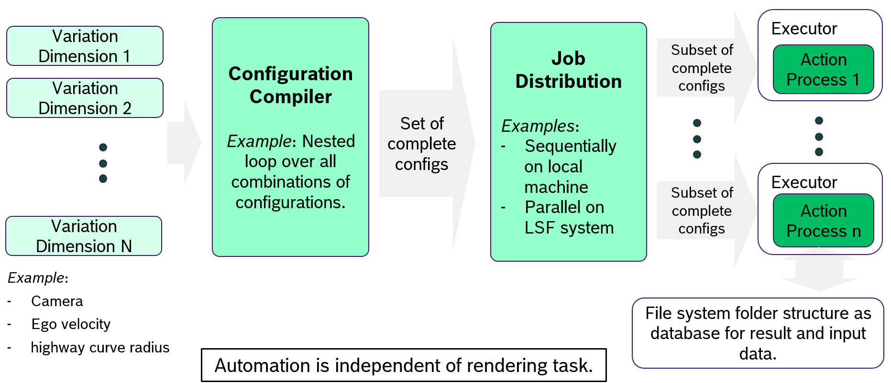
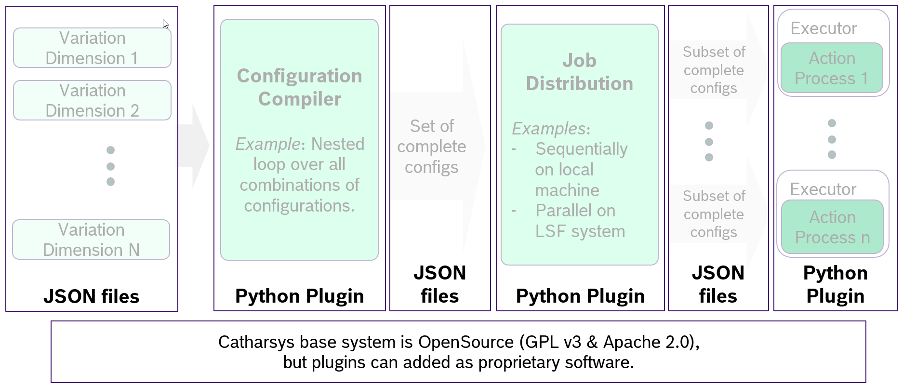
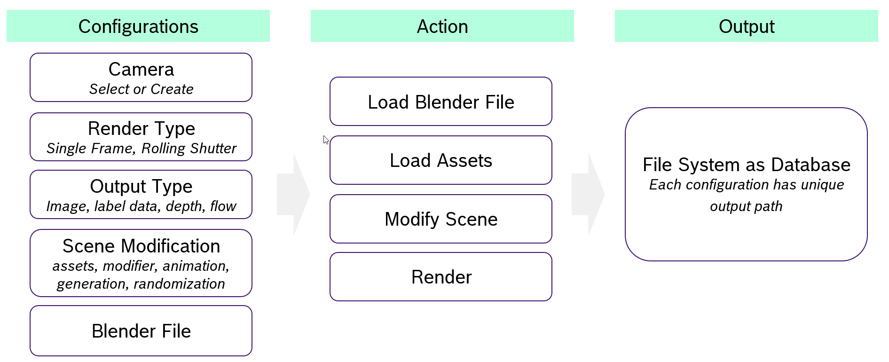
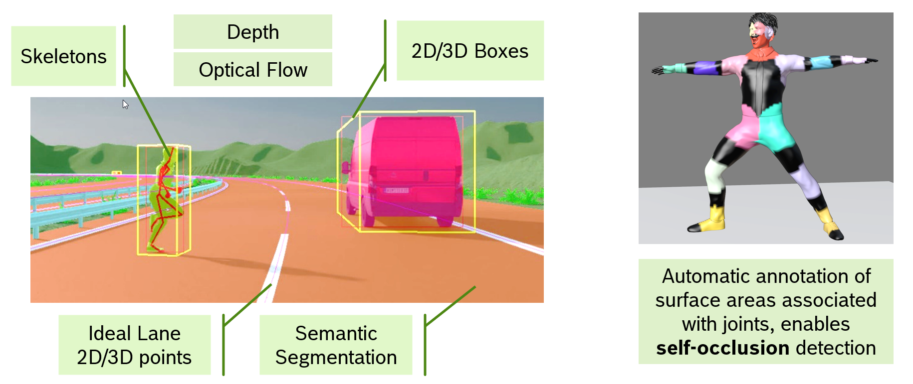

Catharsys Overview#
At its’ heart Catharsys is simply a configuration compiler, that takes a bunch of partial configurations, combines them in some way to complete configurations, and then starts some actions passing the generated complete configuration files as argument. The actions are typically Python scripts that are executed. Typical actions are rendering with Blender or post-processing images.
System Structure#
Here is an overview of the basic system structure:
{kind=link}
There are a number of components in this image:
Variation Dimensions#
The initial use-case for developing Catharsys was the following: some scene needed to varied in a number of ways and all combinations of variations needed to be rendered. That is, there were a couple of variation dimensions, like the camera position, the camera type, the camera velocity, the positions of other objects in the scene (e.g. vehicles, pedestrians).
In Catharsys you can therefore describe the variation dimensions that you want to vary (in a manifest file) and for each dimension specify a set of configurations (in a trial file).
Configuration Compiler#
The default configuration compiler performs a nested loop over all variation dimensions using the specified configurations from the trial file, to create a set of complete configurations. For example, one specific camera position, camera type, ego-velocity and object positions.
Job Distribution#
The set of complete configurations is now distributed to a set of jobs. On a local machine this may just be a sequential processing of all jobs. However, the configurations may also be split in sub-sets and executed in parallel by starting multiple processes on you local machine, or queuing jobs on a job distribution system like LSF.
Executor#
For each action type an executor has to be specified, that starts the execution of the actual action. For example, the rendering action is a python scripts that is executed inside Blender. The executor therefore starts Blender, passing it the action script and the path to the complete configuration file.
Action#
The action is some process that is started by an appropriate executor and receives one or a set of complete configurations. The configuration file contains, next to the user specified configurations, also a path where the action should store its resultant data. This path is derived from the ids of the configuration files, so that every configuration combination has a unique target path.
Implementation#
Many parts of the Catharsys system can be extended with plugins. The following image shows the various parts that are implemented as plugins.
{kind=link}
The python plugins are realized via entry points specified in the repository’s setup.cfg file. Installing a module in the a python environment makes the plugin available to the whole system. In the configuration files you can reference actions and other parts via id strings.
For example, you can write your own action and register it in the system simply by installing it with pip install. The action can then be referenced via the id-string from your configurations and you can use the configuration compilation and job distribution features of Catharsys right away.
You can create an action plugin from a template using the command cathy install template std-action-python. You can list all available templates with cathy install template --list.
Note that the Blender rendering is also just an action plugin. If you wanted to render using a different render engine, simply write your own action and executor.
Blender Render Action#
One of the central actions is the Blender render action. It consists of the following parts:
{kind=link}
Configurations#
The main parts you need to specify to render are:
a camera (select or create one)
a render type, which currently can be standard rendering or rolling shutter simulation
the output type(s), like image, label data, depth or optical flow
scene modifications, like loading objects, changing the position of objects, randomizing a scene, or generating objects,
and, of course, a Blender file.
The render action itself, first loads the Blender file, loads any assets you may want to import, modifies the scene according to your configurations and finally renders. Instead of rendering, the action can also simply store the modified Blender scene. This can be helpful if you first want to create different scenes, and at a later stage render different variations of each scene.
Finally, the file system is used as a database to store the generated images based on the combination of configuration ids.
Catharsys Blender Addons#
The Catharsys system comes with a number of Blender addons, that help you creating scenes:
AnyCam (image-render-blender-camera)#
This addon allows you to create camera from a database of cameras. The basic idea of this addon is that you can have a database of camera that combine a resolution with a projection type. Activting such a camera then sets all Blender parameters necessary to generate an appropriate imaging.
Next to standard pinhole or fisheye cameras, the addon also allows you to create look-up-table based cameras and light field tracing cameras. The latter simulate ray-tracing as in optics design tools like ZEMAX. For this to work, you need to specify all optical surfaces, but it allows you to simulate distortion, depth-of-field, vignetting, chromatic abberation, psf, close to the actual optics.
AnyVehicles (image-render-blender-vehicles)#
This addon animates 4-wheel and 2-wheel vehicles. It will simulate the movement of a vehicle following a NURBS curve on a flat surface, such that the center of non-steering axis always follows that path, while the steering is (nearly) physically correct.
AnyHumans (image-render-blender-humans)#
This addon is a Catharsys wrapper for the Human Generator V3 Blender addon. It enable the HumGenV3 addon to be controlled via Catharsys configurations.
AnyPoints (image-render-blender-points)#
This addon allows you to import and animate point clouds.
AnyTruth (image-render-blender-label)#
This addon allows you to define labels for Blender scene collections. This enables the rendering of label ground truth with 3d boxes, 2d boxes, semantic segmentation and skeletons.
{kind=link}